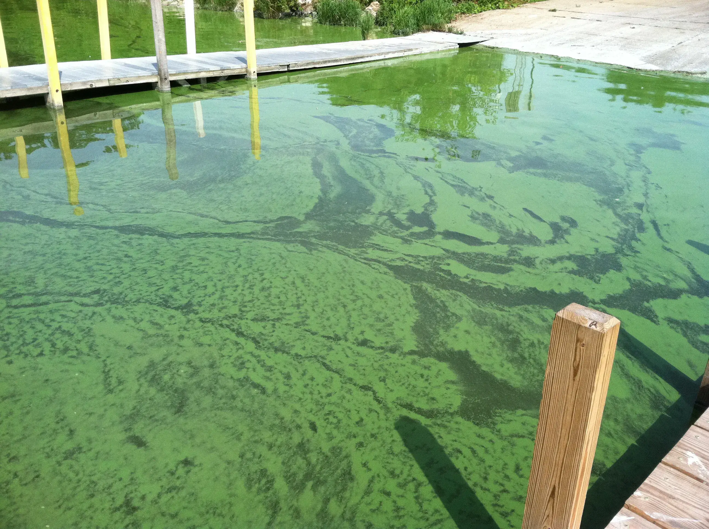

Launching the California Water:Assessment of Toxins for Community Health project (CalWATCH)
California is home to 40 million people, over 3,000 lakes and reservoirs, and over 4,500 water systems with five or more household connections. Tracking exposures and illnesses associated with recreational contact, subsistence fishing, traditional cultural uses, and drinking water is uneven across the state. Two types of threats in particular are not well tracked or documented: exposure to harmful algal blooms (HABs), and the safety and monitoring of private wells and very small community water systems (VSCWS; fewer than five connections).That is why Tracking California has launched the "California Water:Assessment of Toxins for Community Health" project, or CalWATCH, funded by the CDC. HABs and drinking water contaminants are difficult and expensive to eliminate, but exposures can be prevented through data collection and public education about the hazards and how to avoid them.
While some CalWATCH proposed activities will be statewide in focus, the work on drinking water testing and recreational water contact education will focus on the Clear Lake area in Lake County. Clear Lake has experienced a sharp increase in HABs activity since 2009 and over 60% of Lake County residents receive their drinking water from the Lake, which is not systematically tested for the presence of cyanotoxins at intake or as finished drinking water. Research suggests that households reliant on wells for drinking water may not be aware of the risks and may not have resources for testing water.
The proposed approach is four-fold: (1) To increase capacity statewide for reliable and accurate data collection for OH HABS illness reporting and outreach to increase awareness of HABs; (2) To increase outreach and communication around HABs with stakeholders in Lake County for recreational freshwater beaches to improve awareness, communication, and illness reporting; (3) To identify private wells close to Clear Lake and connect with property owners to offer testing and raise awareness of well-water hazards; and (4) To identify water intakes, offer testing, and increase communication between local public health and drinking water entities and VSCWS drawing water from Clear Lake.